This Issue
August 2026 edition
82 vs 154
Flip resales recorded this edition versus the same two months a year ago
Flip exits fell to 82 from 154 a year ago, and the deals that did close cleared a 41.5% gross margin against 60.2%
Flip resales fell to 82 from 154 a year ago, while investor purchases rose to 819 from 665. The exits that closed did so at a median $228,500, down from $240,000, on a median gross margin of 41.5% versus 60.2% a year ago. Sellers moved faster — a median 162 days held versus 194.5 — and there were fewer of them: 60 operators recorded a flip sale against 117. Margins here are gross; rehab and carry costs are not in the public record.
Investor Playbook
What this issue's numbers suggest checking, by investor type. Observations from recorded data — not investment, legal, or tax advice.
Price contracts to a 41.5% gross margin, not last year's 60.2%
Wholesalers
Only three assignments surfaced on recorded deeds this edition at a median $7,000 spread, versus six at $19,500 a year ago — a floor, but a thin one. With flipper acquisitions at 131 versus 181, the data suggests fewer buyers competing for each contract. Worth checking the volume zips where buy-side demand is documented: 27406 South Greensboro (57 investor purchases, median buy $150,000), 27320 Reidsville (52, $128,500) and 27288 Eden (49, $53,000).
Underwrite the $228,500 exit at $159.79/sqft and a 162-day hold
Flippers
Median resale was $228,500 on a median 162-day hold, down from $240,000 and 194.5 days a year ago, with resale basis at $159.79/sqft versus $172.77. Pre-1950 product is 28.0% of exits versus 14.3%, so scope risk on older houses is now the median case, not the exception. Held flip inventory stands at 2,290 units with 28 aged out in the latest month — the data suggests testing exit price before adding a second project.
The $/sqft gap between product types is the buy signal this period
Landlords
Investor purchases ran 819 at a median $195,000, up from 665 at $188,000 a year ago. Within that, single family closed at a median $206,500 ($143.91/sqft) while mobile/manufactured closed at $100,000 ($83.61/sqft) across 44 deals, and 2-4 units at $225,000 ($120.66/sqft) across 7. Worth checking Eden 27288 (median buy $53,000) and Reidsville 27320 ($128,500) against Guilford College 27410 ($365,000) before committing basis.
Fill the 6-to-9-month bridge that 162-day holds now imply
Private lenders
Recorded private loans fell to 8 from 30 a year ago while seller-held notes rose to 72 from 50 — borrowers are finding paper elsewhere. Trailing-twelve-month benchmarks: median loan $147,500, median loan-to-price 0.95, 40.3% of financed purchases including rehab dollars. Kiavi led with 27 loans to 11 borrowers at a median $165,900 and a 77.8% rehab share, so the competitive set on rehab paper is identifiable and narrow.
Small multifamily is nearly absent from flip exits — basis is set by purchases
Multifamily investors
Small multi made up 1.2% of flip resales this edition versus 1.9% a year ago, so comparable exits are scarce and pricing has to come off the buy side. Purchase records show Apartment 5+ at 9 deals, median $335,000 and $95.61/sqft, and 2-4 units at 7 deals, median $225,000 and $120.66/sqft — both below the $143.91/sqft single family basis. With seller notes at 72 versus 50, worth checking whether structured paper is available on these smaller assets.
Factoids
Numbers from this period a practitioner would repeat to a colleague. Each computed directly from recorded instruments.
131 flipper purchases — Homes bought by flippers this edition
trending down · vs 181 a year ago
Acquisitions fell less than exits did, so the net add to held flip inventory was 49 this edition against 27 a year ago. The buy side is still absorbing product faster than the sell side clears it.
60 selling operators — Distinct operators who recorded a flip sale
trending down · vs 117 a year ago
The seller pool roughly halved, but concentration eased rather than rose: the top ten operators took 41.1% of flip revenue versus 55.8% a year ago. Fewer large programs are clearing homes, not more.
Median flip built 1970 — Median year built of homes resold as flips
trending down · was 1981 a year ago
Pre-1950 stock made up 28.0% of flip resales versus 14.3% a year ago, and median resale basis slipped to $159.79/sqft from $172.77. Older, smaller product (median 1,326 sqft vs 1,393.5) is carrying more of the exit volume.
Rockingham 24.4% of flips — Rockingham County share of flip resales
trending up · vs 16.2% a year ago
Guilford's share of flip exits fell to 62.2% from 69.5% over the same comparison. At the zip level, 27406 South Greensboro moved to 14.6% of flips from 9.7% and 27320 Reidsville to 11.0% from 7.1%.
8 private loans recorded — Recorded private-lender instruments this edition
trending down · vs 30 a year ago
Median recorded private loan was $167,000 against $140,171 a year ago — fewer, larger tickets. Across the trailing twelve months 352 of 620 observed investor purchases carried recorded financing, a 56.8% financed share, with 40.3% of those including rehab funds.
72 seller-financed notes — New notes held by sellers this edition
trending up · vs 50 a year ago
Median note size was $182,500 against $156,250 a year ago, and the count is up from 63 in the prior period. Paper written at closing is filling part of the gap left by scarce recorded private loans.
Market Activity — Investor Purchases
Monthly count of investor purchases of MSA properties (left axis) and the median purchase price (right axis), trailing 13 months. The most recent month can grow up to ~15% as late recordings arrive.
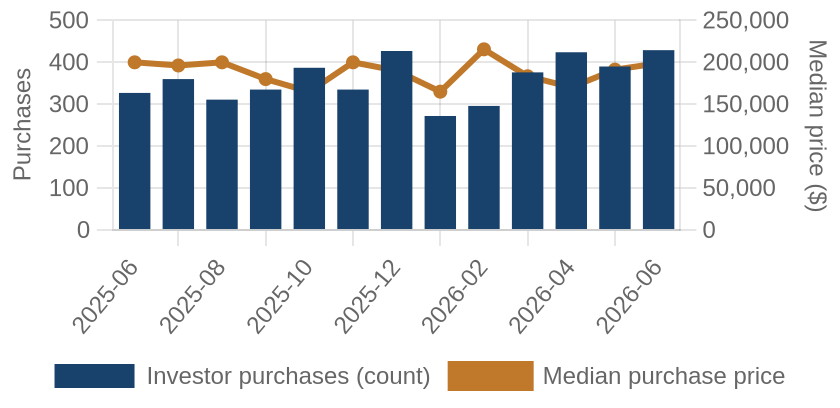
Investor purchases per month (bars) and median purchase price (line), trailing 13 months.
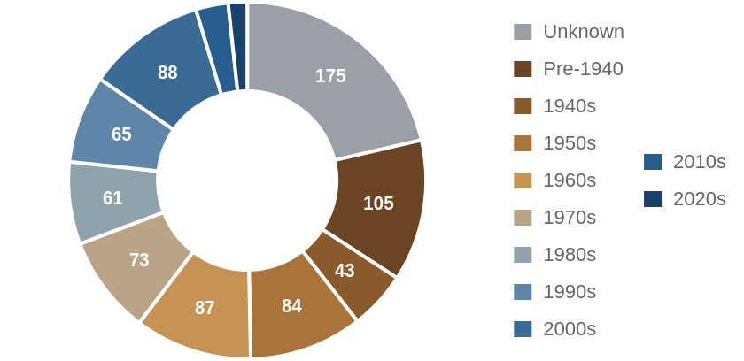
Which vintage of housing investors bought this edition, by decade built.
Where the Money Went
The geography of the period's investor activity: which zip codes saw the most recorded deals, and the largest individual transactions at street level.
The 8 busiest zip codes for investor deals
Pins rank the busiest zips by recorded investor deals (purchases + flips of existing homes) this period — #1 busiest; orange = top 3; pin size scales with deal volume. Median buy is the typical investor purchase; median sale the typical flip resale. Click a pin for details; full table below.
| # | Zip | Area | Purchases | Flips | Median buy | Median sale |
|---|
| #1 | 27406 | South Greensboro | 57 | 12 | $150,000 | $232,500 |
| #2 | 27320 | Reidsville | 52 | 9 | $128,500 | $169,000 |
| #3 | 27288 | Eden | 49 | 7 | $53,000 | $185,000 |
| #4 | 27405 | Northeast Greensboro | 45 | 5 | $190,000 | $255,000 |
| #5 | 27265 | High Point North | 40 | 3 | $262,000 | n/a |
| #6 | 27410 | Guilford College | 35 | 6 | $365,000 | $250,500 |
| #7 | 27262 | High Point West | 35 | 3 | $165,000 | n/a |
| #8 | 27407 | Adams Farm | 33 | 4 | $205,000 | n/a |
A representative deal in each of the busiest zips
One deal per zip: the largest matching this market's typical house (typical for this market: 1380 sqft, 3 bed, built around 1973; priced within 4x the county assessment and under 5x its own zip's median).
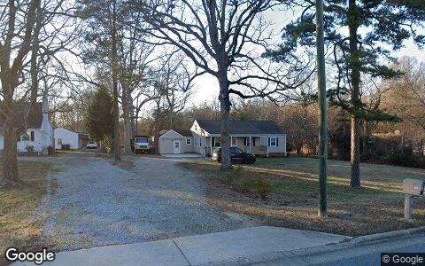
$530,000 · Purchase
3506 GROOMETOWN RD, Greensboro NC 27407
Single family · 1,732 sqft · Jun 15
Street View Jan 2026 — before the purchase
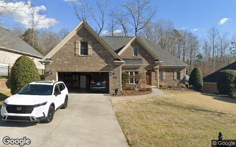
$475,000 · Purchase
2252 CAMBRIDGE OAKS DR, High Point NC 27262
Single family · 2,045 sqft · Jun 25
Street View Jan 2026 — before the purchase
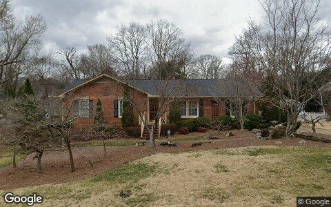
$435,000 · Purchase
1711 CLARENDON DR, Greensboro NC 27410
Single family · 1,652 sqft · May 29
Street View Feb 2026 — before the purchase
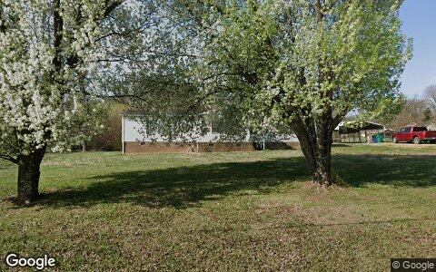
$215,000 · Purchase
580 MANGUM RD, Reidsville NC 27320
Mobile / manufactured · 1,782 sqft · Jun 17
Street View Mar 2026 — before the purchase
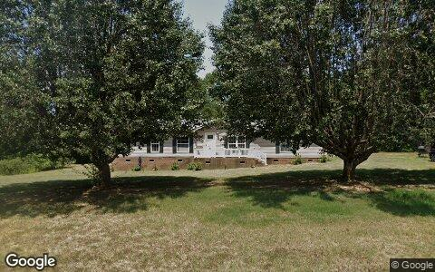
$103,000 · Purchase
1650 LINCOLN ST, Eden NC 27288
Mobile / manufactured · 1,876 sqft · May 8
Street View Jul 2024 — before the purchase
Deal sheet — private lending, in date order
Private loans recorded against residential property this period, oldest first.
| Date | Lender | Amount | Property | Use |
|---|
| May 14 | Churchill David | $220,400 | 3230 Pine Brook LN, Greensboro NC 27406 | 2–4 unit |
Largest flip margin deals of the period, at street level
Gross margin = recorded sale price minus the flipper's recorded purchase price. Purchase deeds are recoverable for roughly 4 in 10 flips; rehab and carry costs are not public record.
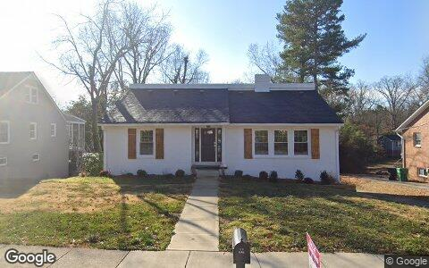
$200,000 gross · bought $270,000 (Jul 2025) → sold $470,000
803 SUNSET DR, High Point NC 27262
Single family · 2,794 sqft · May 29
Street View Jan 2026 — during the flip
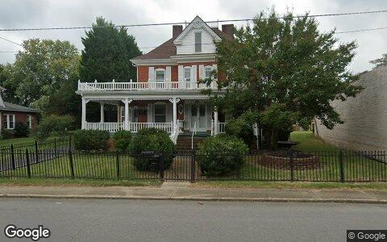
$181,000 gross · bought $99,000 (Nov 2025) → sold $280,000
127 THE BLVD, Eden NC 27288
Single family · 3,358 sqft · May 5
Street View Sep 2024 — before the flip (pre-renovation)
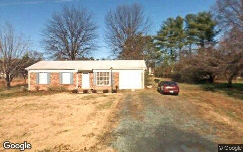
$155,000 gross · bought $80,000 (Oct 2025) → sold $235,000
2016 BRYANT ST, Madison NC 27025
Mobile / manufactured · 1,000 sqft · Jun 10
Street View Dec 2007 — before the flip (pre-renovation)
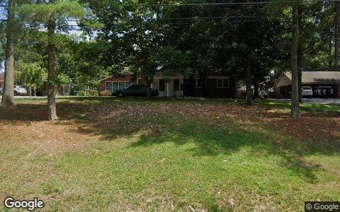
$149,276 gross · bought $160,724 (Jul 2025) → sold $310,000
538 E STADIUM DR, Eden NC 27288
Single family · 2,190 sqft · May 14
Street View Jul 2024 — before the flip (pre-renovation)
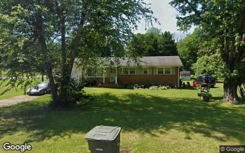
$134,000 gross · bought $126,000 (Nov 2025) → sold $260,000
3562 CHERRY LN, Greensboro NC 27405
Single family · 1,125 sqft · May 27
Street View Jun 2022 — before the flip (pre-renovation)
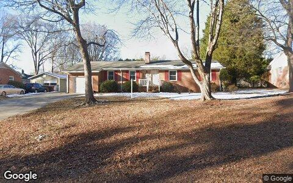
$132,000 gross · bought $250,000 (Nov 2025) → sold $382,000
6112 LEA RAY DR, Greensboro NC 27410
Single family · 1,974 sqft · May 4
Street View Feb 2026 — during the flip
Flip Structure — Year over Year
How the flip market itself is changing: margins, who is doing the flipping, what they flip, and where. Same two calendar months, this year vs last, from the current data extract.
| Flip market structure | Same months last year | This edition |
|---|
| Flips sold | 154 | 82 |
| Median sale | $240,000 | $228,500 |
| Median $/sqft | $173 | $160 |
| Sale vs county-assessed | 1.58× | 1.54× |
| Median gross margin (matched buys) | $100,500 | $67,194 |
| Median margin % | 60% | 42% |
| Median hold | 6.4 mo | 5.3 mo |
| Homes bought by flippers | 181 | 131 |
| Net to inventory (bought − sold) | +27 | +49 |
| Active flippers | 117 | 60 |
| Top-10 flippers' revenue share | 56% | 41% |
| Median house: sqft / beds / built | 1394 / 3 / 1981 | 1326 / 3 / 1970 |
| Pre-1950 stock share | 14% | 28% |
| 2–4 unit share | 2% | 1% |
| Median distance from downtown | 21.2 km | 21.5 km |
Homes bought counts every deed recorded to a known flipper in the window, resold or not. Net to inventory is that minus flips sold. The standing stock is in the Flip Pipeline section.
Attributed profit per flip (per-investor aggregates, by drop period): Feb 26→Jun 26: 296 flips, $104,750/flip · Jun 26→Aug 26: 79 flips, $118,799/flip.
County mix (share of flips, last year → this edition): Guilford 69%→62% · Rockingham 16%→24% · Randolph 14%→13%.
Biggest zip share moves: South Greensboro 9.7%→14.6% · Reidsville 7.1%→11.0% · Guilford College 3.9%→7.3% · Eden 5.2%→8.5% · Gibsonville 3.2%→0.0% · North Greensboro 0.6%→3.7%.
Flip Pipeline — Buying, Selling and Inventory
Homes bought by known flippers and homes they resold, per month, alongside the stock sitting in flipper hands. A house enters inventory when a flipper buys it and leaves on the next recorded sale, at any price. Purchases still unsold after five years are treated as holds and drop out.
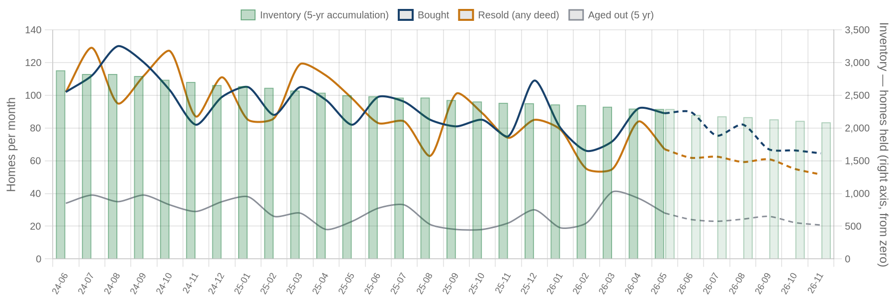
Solid = recorded, dashed = projected. Green bars are inventory on the right axis: homes bought and not yet resold. Aged out is purchases passing five years unsold. Inventory moves by bought minus resold minus aged out.
| Flip pipeline | Bought / mo | Resold / mo | Aged out / mo | Inventory |
|---|
| Latest recorded month (2026-05) | 89 | 67 | 28 | 2,290 |
| Projected (2026-11) | 65 | 52 | 21 | 2,087 |
Method: a straight-line trend through the last 24 months, adjusted for the month of the year, shown dashed as a projection. The series stops before the newest month or two, where deeds are still recording.
Who's Funding the Deals
First mortgages open on flipper purchases from Jul 2025 – Jun 2026 that have not yet resold. 57% carried recorded debt; the rest closed cash or off-record. Ranked by deal count.
57%
Purchases financed
352 of 620 flipper purchases carried a recorded first mortgage
$147,500
Typical loan
median 0.95× the purchase price
40%
Funding the rehab too
142 of 352 loans exceed the purchase price, so the lender is covering work as well as the buy
| Lender | Loans | Borrowers | Median loan | Loan vs price | Funds rehab | Median purchase |
|---|
| Kiavi Funding INC | 27 | 11 | $165,900 | 1.21× | 78% | $152,000 |
| State Employees Credit Union | 13 | 8 | $200,000 | 1.08× | 54% | $272,000 |
| RFLF 4 LLC | 9 | 5 | $228,750 | 1.70× | 100% | $176,500 |
| Wells Fargo Bank NA | 9 | 9 | $75,285 | 0.61× | 0% | $135,000 |
| State Employees Cu | 8 | 4 | $134,500 | 0.71× | 12% | $198,500 |
| Allegacy Federal Credit Union | 7 | 1 | $392,000 | 0.80× | 0% | $490,000 |
| Bedrock Mortgage Fund LLC | 6 | 2 | $96,562 | 1.37× | 100% | $67,500 |
| Mckenna Brian | 6 | 2 | $184,228 | 1.22× | 100% | $160,500 |
| Piedmont Federal Savings Bank | 6 | 1 | $524,000 | 1.36× | 100% | $384,500 |
| Anchor Loans LP | 5 | 2 | $124,170 | 1.12× | 80% | $120,189 |
Rates and terms are not published: the county feed models both. Borrowers counts the distinct flippers on each lender's book. Loan vs price is the recorded first mortgage divided by what the buyer paid. Above 1.00x the lender is funding purchase plus rehab; below it the buyer brought cash to the table. Blanket mortgages covering several parcels are excluded, as are loans outside 0.1x-3x the price. Rates and points are not public record.
Flipper Profile — The Working Flipper
The 70th–90th percentile of local flippers by lifetime flip count — the established operators below the whales: 4–10 lifetime flips each. Bath counts are not in the assessor extract.
181
Flippers in the band
each with 4–10 lifetime flips (avg 5.8)
$110,000
Median gross margin
1,088 flips matched to their purchase price
6.1 mo
Typical hold
purchase to resale, matched deals
1380 sqft · 3 bd
Typical house
median year built 1973
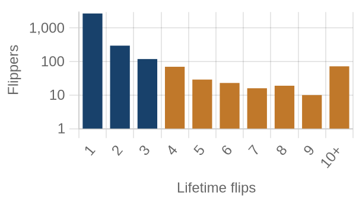
flippers by lifetime flips · orange = this band
Where they work: High Point Central (27260) 8% · High Point North (27265) 7% · Downtown Greensboro (27401) 6% · South Greensboro (27406) 6% · Eden (27288) 6%.
Market Pulse
| per month, Feb–Jun 2026 | per month, Jun–Aug 2026 | change | avg/mo 2yr | avg/mo 4yr |
|---|
| ▼ Homes bought by flippers | 91 | 66 | -28% | 94 | 117 |
| ▼ Flips sold (deeds) | 77 | 41 | -47% | 91 | 107 |
| ▲ Lending deals funded | 13 | 27 | +104% | — | — |
| ▲ Seller/notes held (net) | 17 | 86 | +396% | — | — |
| ▼ Investors (net) | 125 | 106 | -15% | — | — |
Flips and flipper purchases = recorded deeds, same two months each year; their 2- and 4-year columns are per-month averages of the deed series. The remaining rows come from the investor file, which spans 13 months, so they have no multi-year average (2026: Jun 2026 → Aug 2026; 2025: Feb 2026 → Jun 2026).
Past Issues
Methodology
Source Data
County recorder & assessor via FARES
Every figure is computed from recorded instruments (deeds, mortgages, assignments) and assessor property records for the five counties of the Greensboro-High Point-Elyria MSA. No surveys, no estimates, no listings data.
This edition analyzes transactions dated May 1 – June 30, 2026, as recorded through the 2026-08 data extract.
Who Counts as an Investor
Transaction-pattern identification
Investors are entities whose recorded transaction history looks like investing: rental holding (landlords), short-hold resales (flippers), private mortgage lending, note holding, or contract assignment (wholesalers). Banks, homebuilders, iBuyers, SFR funds, and government entities are identified by name and reported separately from small investors.
How Comparisons Work
Attribution deltas + same-window comparisons
The Market Pulse reports activity attributed between successive data drops, from the per-investor lifetime totals maintained upstream — periods differ in length, so per-month rates are shown. Elsewhere, "vs. year ago" compares the same calendar months one year earlier, counted from the same data extract. Transfers under $5,000 (quitclaims, partial interests) are excluded everywhere. Counts lag recording by 4–8 weeks, and the newest month can grow up to ~15% as late records arrive — direction is reliable before magnitude.
Known Limits
Floors, not ceilings
Wholesale assignments only appear when they touch a recorded deed, so those counts are a floor. Flip hold times are measured from the prior recorded sale. Names are the owner of record, which may be an LLC or trust.
About
Purpose
A working tool for small real estate investors in Greater Greensboro-High Point: what actually closed, where, at what prices, and what it suggests checking next — one theme per issue.
Cadence
Published with each bi-monthly data drop, covering the two most recent complete months of recorded activity.
Disclaimer
Observations from public records, not investment, legal, or tax advice. Past activity does not guarantee future results. Verify any property or counterparty independently before transacting.